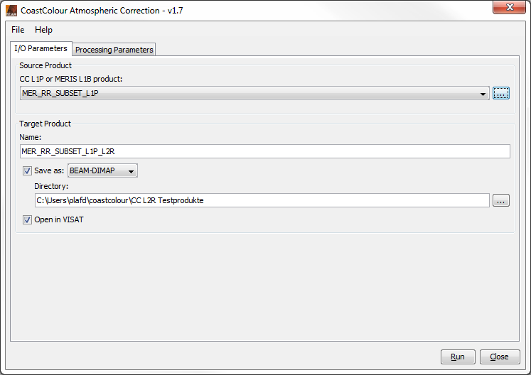
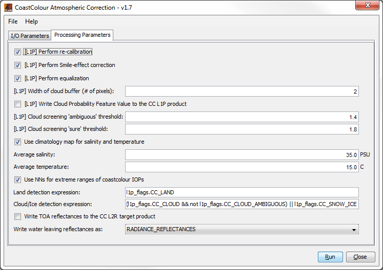
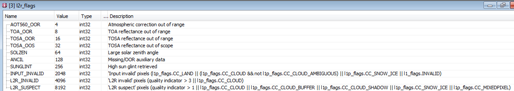
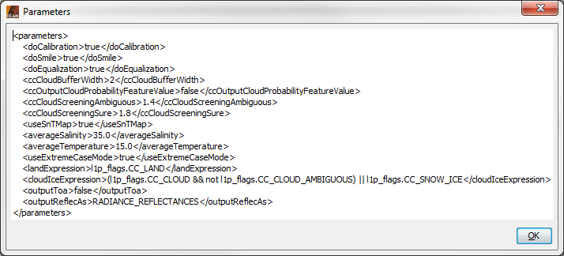
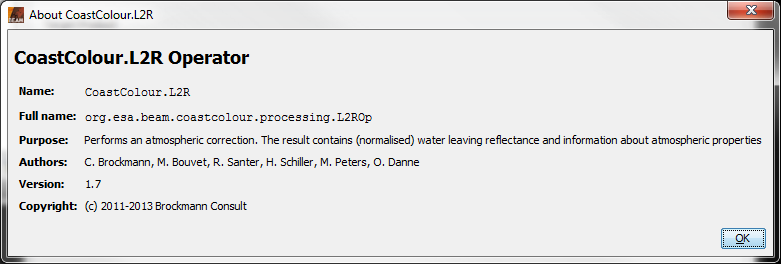
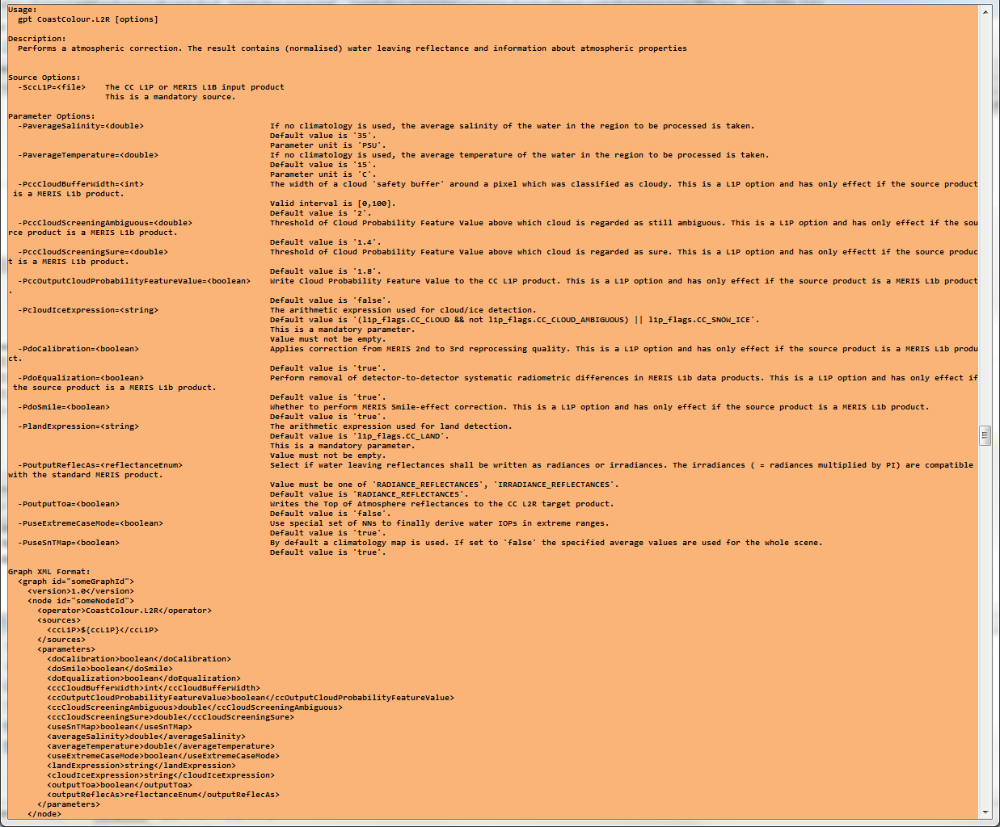

| Atmospheric Correction |
|
Selecting the CoastColour Processors (MERIS)... entry from the VISAT 'Processing --> Thematic Water Processing' sub-menu opens another sub-menu with the three entries 'Pre-Processing and Pixel Classification...', 'Atmospheric Correction...', and 'In-Water Processing...'. Selecting 'Atmospheric Correction...' from this sub-menu pops up the 'Atmospheric Correction' dialog:

CC L1P or MERIS L1B product:
Here the user specifies the CC L1P or the MERIS L1b source product. A 'CC L1P' product is the result product of a previous CoastColour L1P 'Pre-Processing and Pixel Classification' step. If the source product is a MERIS L1b product, that step will be automatically carried out internally before the L2R 'Atmospheric Correction' step. However, in that case, no intermediate CC L1P product, but only an L2R target product will be produced.
The combo box presents a list of all products open in VISAT. The user may select one of these or, by clicking on the button next to the combo box, choose a product from the file system.
Name: Used to specify the name of the target product.
Save to: Used to specify whether the target product should be saved to the file system. The combo box presents a list of file formats, currently BEAM-DIMAP, GeoTIFF, and HDF5.
Open in VISAT: Used to specify whether the target product should be opened in VISAT. When the the target product is not saved, it is opened in VISAT automatically.
Selecting the Processing Parameters tab in the 'Atmospheric Correction' dialog switches to the following view:

TODO!!
[L1P]...: All options starting with '[L1P]...' have the same meaning as described in the documentation for the L1P ''Pre-Processing and Pixel Classification'' processing. These parameters have effect only if an L1P processing step will be performed in advance (i.e. if the source product is not a CC L1P but a MERIS L1B product).
Use climatology map for salinity and temperature: By default a climatology map is used. If this checkbox is not selected, the specified average values (see below) are used for the whole scene.
Average salinity: This is the salinity average value if no climatology map is used.
Average temperature: This is the temperature average value if no climatology map is used.
Use NNs for extreme ranges of coastcolour IOPs: If this checkbox is selected, a special set of NNs will be used to finally derive water IOPs in extreme ranges.
Land detection expressions: This is the arithmetic expression used for land detection.
Cloud/ice detection expressions: This is the arithmetic expression used for cloud/ice detection.
Write TOA reflectances to the CC L2R target product: This checkbox indicates if the TOA reflectances shall be written to the CC L2R target product.
Write water leaving reflectances: This menu indicates if the water leaving reflectances shall be written as radiances or irradiances. The irradiances ( = radiances multiplied by PI) are compatible with the standard MERIS product.
In addition to the 'l1_flags' and the 'l1p_flags', the CC L2R target product provides another flag band 'l2r_flags' with a coding as shown below:

Selecting the File entry in the Menu Bar opens the following view:

Open Parameters...: When this entry is selected, an 'Open File' dialog will appear. Here, a BEAM GPF parameters XML file can be selected, containing 'Atmospheric Correction' parameters which were saved earlier. These parameters will be loaded and applied for an upcoming processing.
Save Parameters...: When this entry is selected, a 'Save File' dialog will appear. Here, the current set of 'Atmospheric Correction' parameters can be saved into a BEAM GPF parameters XML file for later re-usage.
Display Parameters...: When this entry is selected, the current set of 'Atmospheric Correction' parameters will be displayed in XML format (see below).

Selecting the Help entry in the Menu Bar opens the following view:

Help: When this entry is selected, this online help is opened in a separate window.
About...: When this entry is selected, an 'About' dialog for the current processor is opened (see below).


Run: When this button is clicked, the processing will be started with the selected parameters.
Close: When this button is clicked, the processor tool window will be closed.
